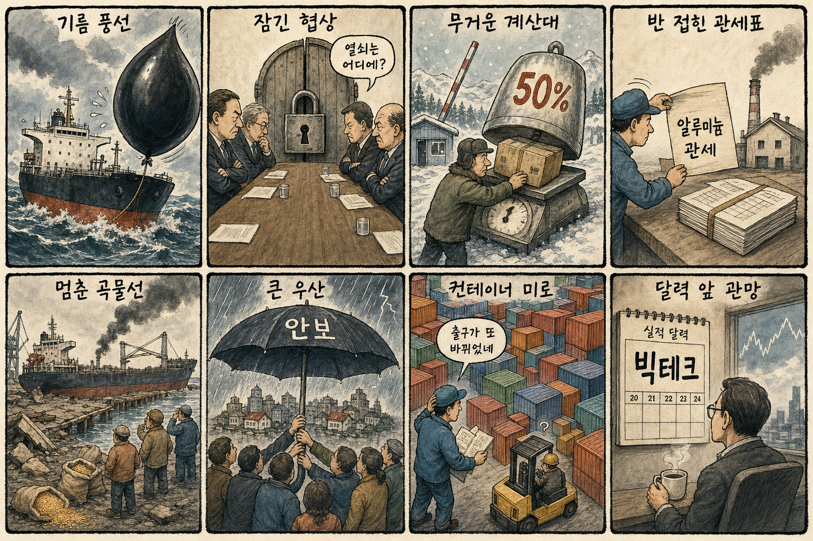
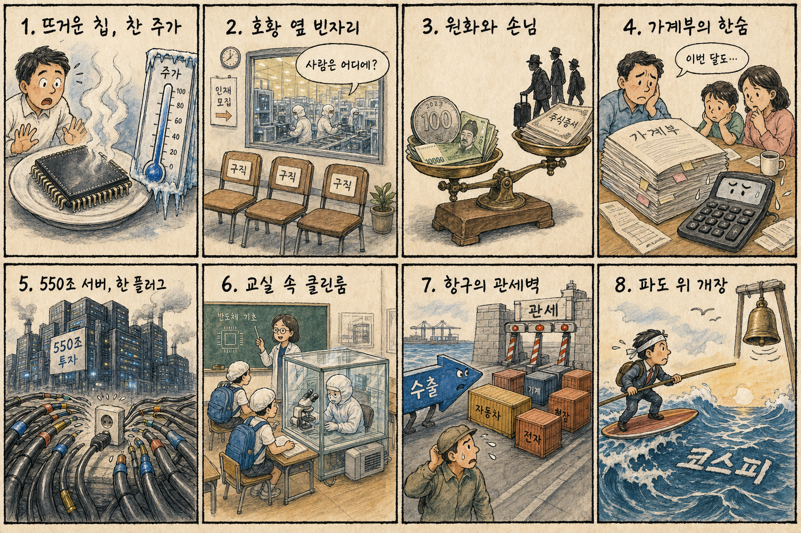

01
테슬라 2.96% 하락…지수 보합권에서도 전기차주 매물 우위
내용요약 7월 17일 미국 정규장 종가를 야후 파이낸스 일봉으로 비교한 결과입니다. 중국 AI 모델 경쟁과 기술주 위험회피가 나스닥 약세와 함께 개별 종목에 반영됐습니다.
예상여파 국내에서는 반도체·AI 대형주의 시초가와 외국인 수급에 직접 연결될 수 있어 낙폭 축소 여부를 확인해야 합니다.
MORNING_BRIEFING_20260721
작성 시각: 2026-07-21 06:44 KST · 직전 미국장 및 2026-07-21 KST 당일 공개 기사 기준
직전 미국 정규장인 7월 20일 장은 다우 -0.59%, S&P 500 -0.19%, 나스닥 -0.05%로 소폭 약세 마감했습니다. 중동 긴장과 빅테크 실적 대기가 지수 상단을 제한했지만 반도체 종목은 순환매가 나타나 한국장에서는 지수보다 업종별 온도차가 중요합니다.
| 지수 | 종가 | 전일 대비 | 한국 증시 영향 |
|---|---|---|---|
| 다우존스 | 51,839.26 | -0.59% | 경기민감·방어주 간 온도차가 커져 코스피 대형주 선별 흐름에 영향 |
| S&P 500 | 7,443.28 | -0.19% | 위험선호 둔화 여부가 외국인 수급과 지수 변동성을 좌우 |
| 나스닥 종합 | 25,508.07 | -0.05% | 반도체 반등 여부가 국내 AI·성장주 심리에 직접 연결 |
다우존스 51,839.26(-0.59%); S&P 500 7,443.28(-0.19%); 나스닥 종합 25,508.07(-0.05%)입니다. 지수 낙폭은 제한됐지만 실적 발표 전 관망이 이어졌습니다.
인텔·브로드컴·마이크론 상승과 테슬라 약세가 엇갈려 국내에서도 HBM·장비주 선별 수급이 예상됩니다.
중동 긴장과 캐나다산 상품 관세 뉴스는 원가·환율·수출주 가격에 동시에 영향을 줄 수 있습니다.
AI 데이터센터 대규모 투자와 전력 조달 이슈가 전력기기·ESS의 실적 연결성을 다시 부각합니다.
| 종목 | 전일 등락률 | 메모 |
|---|---|---|
| SK하이닉스 | -4.23% | 1,842,000원 → 1,764,000원. 나스닥과 AI 반도체 흐름이 국내 HBM 대표주 수급으로 연결되는 종목 |
| HD현대일렉트릭 | -5.65% | 797,000원 → 752,000원. AI 데이터센터 전력·ESS와 전력망 투자 논리가 연결되는 종목 |
| 한화에어로스페이스 | -7.21% | 943,000원 → 875,000원. 중동·우크라이나 안보 뉴스가 방산 수출 기대와 연결되는 종목 |
| 지수 | 종가 | 전일 대비 | 해석 |
|---|---|---|---|
| 다우존스 | 51,839.26 | -0.59% | 경기민감·방어주 간 온도차가 커져 코스피 대형주 선별 흐름에 영향 |
| S&P 500 | 7,443.28 | -0.19% | 위험선호 둔화 여부가 외국인 수급과 지수 변동성을 좌우 |
| 나스닥 종합 | 25,508.07 | -0.05% | 반도체 반등 여부가 국내 AI·성장주 심리에 직접 연결 |
방산, 데이터센터 전력망·ESS, 통신·필수소비 등 방어 업종
AI 반도체·고밸류 성장주, 유가 민감 항공·화학, 실적 가시성이 낮은 테마주
내용요약 7월 17일 미국 정규장 종가를 야후 파이낸스 일봉으로 비교한 결과입니다. 중국 AI 모델 경쟁과 기술주 위험회피가 나스닥 약세와 함께 개별 종목에 반영됐습니다.
예상여파 국내에서는 반도체·AI 대형주의 시초가와 외국인 수급에 직접 연결될 수 있어 낙폭 축소 여부를 확인해야 합니다.
내용요약 AI 반도체와 메모리 공급망을 둘러싼 당일 기사입니다. 투자자들은 실적 눈높이와 수요 둔화 가능성을 동시에 확인하고 있습니다.
예상여파 삼성전자·SK하이닉스·반도체 장비주의 장중 수급이 민감하게 반응할 수 있습니다.
내용요약 7월 17일 미국 정규장 종가를 야후 파이낸스 일봉으로 비교한 결과입니다. 중국 AI 모델 경쟁과 기술주 위험회피가 나스닥 약세와 함께 개별 종목에 반영됐습니다.
예상여파 국내에서는 반도체·AI 대형주의 시초가와 외국인 수급에 직접 연결될 수 있어 낙폭 축소 여부를 확인해야 합니다.
내용요약 7월 17일 미국 정규장 종가를 야후 파이낸스 일봉으로 비교한 결과입니다. 중국 AI 모델 경쟁과 기술주 위험회피가 나스닥 약세와 함께 개별 종목에 반영됐습니다.
예상여파 국내에서는 반도체·AI 대형주의 시초가와 외국인 수급에 직접 연결될 수 있어 낙폭 축소 여부를 확인해야 합니다.
내용요약 AI 데이터센터 확대가 전력망·ESS·인프라 투자로 이어지는 흐름을 다룬 기사입니다. 병목이 전력 설비 영역으로 옮겨가는 모습입니다.
예상여파 전선·전력기기·원전·ESS 밸류체인은 개별 수주와 정책 뉴스에 따라 상대강도를 보일 수 있습니다.
미국 지수 낙폭이 작고 메모리·AI 인프라주가 반등한 점은 국내 반도체 투자심리에 완충재입니다. 다만 국제유가 상승과 추가 관세는 원화와 외국인 수급에 부담이 될 수 있어, 개장 초 SK하이닉스·삼성전자의 낙폭 회복 여부와 정유·전력기기 상대강도를 함께 봐야 합니다.
| 한국 종목 | 연결 이유 | 단기 확인 포인트 |
|---|---|---|
| SK하이닉스 | 마이크론 상승과 ‘키미 K3는 GPU보다 HBM 수혜’ 보도가 전일 급락 뒤 국내 HBM 대표주의 수급 회복 논리로 연결됩니다. | 외국인 순매수 전환, 전일 저점 지지, 삼성전자 대비 상대강도 |
| HD현대일렉트릭 | 한국의 550조원 AIDC 투자 구상과 데이터센터 전력 조달 논쟁이 전력기기·전력망 증설 수요로 연결됩니다. | 전력기기 동반 거래대금, 신규 수주 공시, 기관 매수 지속성 |
| S-Oil | 중동 긴장 속 브렌트유 상승과 국내 윤활기유 수출 호조가 정제마진·제품 스프레드 기대를 동시에 자극할 수 있습니다. | 국제유가 상승 지속성, 정제마진, 항공·화학 대비 정유 업종 상대강도 |
주말 누적 재료가 외국인 현·선물 수급과 코스닥 거래대금에 어떻게 반영되는지 봅니다.
당일 국제 뉴스가 원/달러 환율과 국제유가 기대에 미치는 영향을 점검합니다.
직전 미국 반도체 흐름 뒤 국내 대형주의 방향과 저가 매수 유입 여부를 확인합니다.
나스닥 선물 방향이 국내 성장주의 장중 위험선호를 지지하는지 봅니다.
핵심 요약: AI기본법 후속 제도 시행, 중국 초대형 모델의 추격, 구글의 차세대 추론 칩, 스타트업 자금조달 관행, 550조원 규모 AIDC 투자 구상이 규제·칩·자본·전력의 네 축을 동시에 움직이고 있습니다.
내용요약 국내 증시와 거시 환경을 다룬 당일 기사입니다. 반도체 대형주, 환율, 성장률 전망이 투자심리의 핵심 변수입니다.
예상여파 외국인 순매매와 원/달러 환율 안정 여부가 국내 지수 반등의 우선 확인 포인트입니다.
내용요약 AI 활용과 규제, 산업 적용 범위가 넓어지고 있음을 보여주는 기사입니다. 기술 확산의 속도와 신뢰성 논쟁이 동시에 커지고 있습니다.
예상여파 AI 소프트웨어·클라우드·보안·데이터 인프라 종목은 실적 연결성이 있는 기업 위주로 선별해야 합니다.
내용요약 AI 반도체와 메모리 공급망을 둘러싼 당일 기사입니다. 투자자들은 실적 눈높이와 수요 둔화 가능성을 동시에 확인하고 있습니다.
예상여파 삼성전자·SK하이닉스·반도체 장비주의 장중 수급이 민감하게 반응할 수 있습니다.
내용요약 AI 활용과 규제, 산업 적용 범위가 넓어지고 있음을 보여주는 기사입니다. 기술 확산의 속도와 신뢰성 논쟁이 동시에 커지고 있습니다.
예상여파 AI 소프트웨어·클라우드·보안·데이터 인프라 종목은 실적 연결성이 있는 기업 위주로 선별해야 합니다.
내용요약 AI 활용과 규제, 산업 적용 범위가 넓어지고 있음을 보여주는 기사입니다. 기술 확산의 속도와 신뢰성 논쟁이 동시에 커지고 있습니다.
예상여파 AI 소프트웨어·클라우드·보안·데이터 인프라 종목은 실적 연결성이 있는 기업 위주로 선별해야 합니다.
핵심 요약: 중동 긴장으로 국제유가가 상승한 가운데 하마스 지도부 교체, 미국의 캐나다산 상품 50% 관세와 조건부 알루미늄 관세 인하, 러시아의 우크라이나 항구 공격이 에너지·통상·물류 위험을 높였습니다.
내용요약 중동 긴장과 원유 공급 우려가 시장의 핵심 변수로 부상했다는 보도입니다. 유가와 환율이 함께 움직이면 위험자산 선호가 약해질 수 있습니다.
예상여파 정유·해운·방산에는 단기 관심이 붙을 수 있고, 항공·화학·소비주는 비용 부담을 점검해야 합니다.
내용요약 하마스가 휴전 협상을 주도해 온 강경파 칼릴 알하야를 새 수장으로 선출했다는 당일 보도입니다. 지도부 교체 이후 협상 노선의 지속 여부가 주목됩니다.
예상여파 가자 휴전 협상과 중동 위험 프리미엄이 다시 흔들릴 수 있어 유가·해운·방산 가격 반응을 함께 봐야 합니다.
내용요약 미국의 조건부 관세 인센티브와 캐나다산 상품 추가 관세, 다자무역 질서 변화가 당일 핵심 통상 변수로 제시됐습니다. 생산기지 위치와 원산지가 가격 경쟁력을 좌우하는 흐름입니다.
예상여파 자동차·알루미늄·수출 제조업은 관세 적용 범위와 현지 생산 계획에 따라 비용과 수주 기대가 엇갈릴 수 있습니다.
내용요약 미국의 조건부 관세 인센티브와 캐나다산 상품 추가 관세, 다자무역 질서 변화가 당일 핵심 통상 변수로 제시됐습니다. 생산기지 위치와 원산지가 가격 경쟁력을 좌우하는 흐름입니다.
예상여파 자동차·알루미늄·수출 제조업은 관세 적용 범위와 현지 생산 계획에 따라 비용과 수주 기대가 엇갈릴 수 있습니다.
내용요약 러시아가 우크라이나 항구를 공격하고 자포리자에도 유도폭탄 공격이 이어졌다는 당일 보도입니다. 항만과 곡물 물류에 대한 군사적 위험이 지속되고 있습니다.
예상여파 곡물·해운·에너지 공급망의 보험료와 운송비가 민감하게 반응할 수 있고 유럽 안보 지출 논리도 강화될 수 있습니다.

핵심 요약: 반도체 기업의 호실적과 주가 약세가 엇갈리고, 반도체 호황에도 고용의 체감 회복은 더딥니다. 유가 90달러와 대출 문턱, 다자무역 질서 약화가 가계·중소기업·수출 제조업의 부담으로 이어질 수 있습니다.
내용요약 AI 반도체와 메모리 공급망을 둘러싼 당일 기사입니다. 투자자들은 실적 눈높이와 수요 둔화 가능성을 동시에 확인하고 있습니다.
예상여파 삼성전자·SK하이닉스·반도체 장비주의 장중 수급이 민감하게 반응할 수 있습니다.
내용요약 AI 반도체와 메모리 공급망을 둘러싼 당일 기사입니다. 투자자들은 실적 눈높이와 수요 둔화 가능성을 동시에 확인하고 있습니다.
예상여파 삼성전자·SK하이닉스·반도체 장비주의 장중 수급이 민감하게 반응할 수 있습니다.
내용요약 중동 긴장과 원유 공급 우려가 시장의 핵심 변수로 부상했다는 보도입니다. 유가와 환율이 함께 움직이면 위험자산 선호가 약해질 수 있습니다.
예상여파 정유·해운·방산에는 단기 관심이 붙을 수 있고, 항공·화학·소비주는 비용 부담을 점검해야 합니다.
내용요약 대출 심사가 강화되는 가운데 중소기업 연체율까지 상승해 자금 조달 여건이 팍팍해지고 있다는 당일 보도입니다. 금리와 신용 위험을 함께 관리해야 하는 금융권의 부담이 커지고 있습니다.
예상여파 은행에는 건전성 관리가, 중소기업과 내수에는 이자·운전자금 부담이 핵심 변수여서 연체율과 대출금리 방향을 확인해야 합니다.
내용요약 미국의 조건부 관세 인센티브와 캐나다산 상품 추가 관세, 다자무역 질서 변화가 당일 핵심 통상 변수로 제시됐습니다. 생산기지 위치와 원산지가 가격 경쟁력을 좌우하는 흐름입니다.
예상여파 자동차·알루미늄·수출 제조업은 관세 적용 범위와 현지 생산 계획에 따라 비용과 수주 기대가 엇갈릴 수 있습니다.
